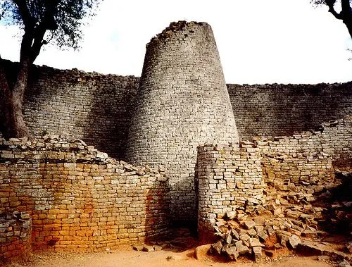
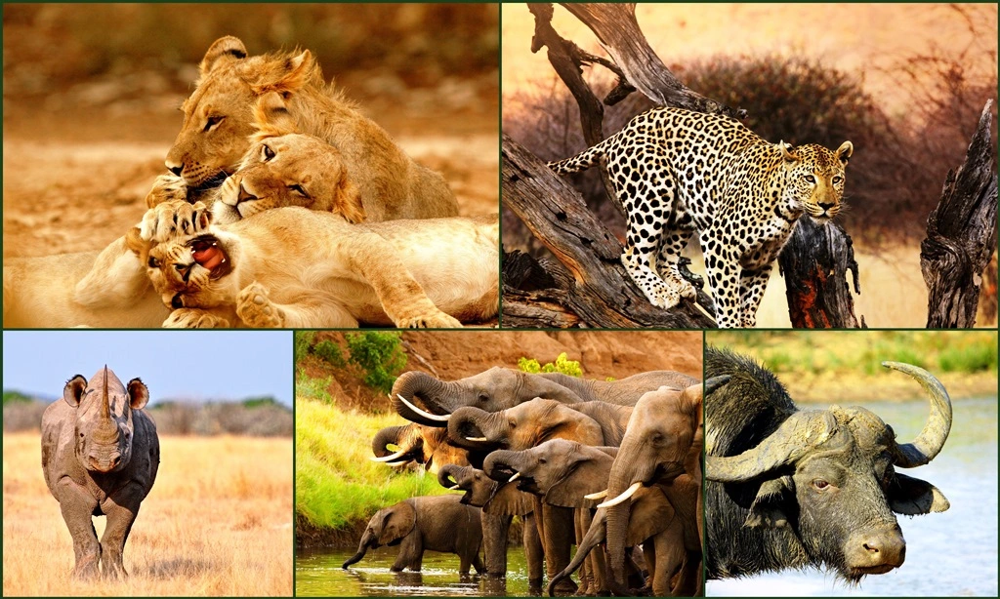

Discover Zimbabwe - Land of Natural Wonders
About Zimbabwe
Zimbabwe is a landlocked country in Southern Africa, known for its dramatic landscapes, diverse wildlife, and rich cultural heritage. Highlights include the breathtaking Victoria Falls, one of the largest and most famous waterfalls in the world, the ancient Great Zimbabwe Ruins which showcase the country's medieval civilization, and Hwange National Park, renowned for its massive elephant herds and variety of wildlife. Additionally, the country boasts the scenic Eastern Highlands, with their lush mountains and rolling hills, ideal for hiking and exploring. The charming city of Harare, the capital, offers vibrant markets and a blossoming art scene, while the historical town of Bulawayo is a gateway to numerous attractions, including the Matobo National Park, home to impressive rock art and granite kopjes. Zimbabwe's cultural tapestry is rich and varied, reflecting the influences of its multiple ethnic groups, with traditional music, dance, and art playing a crucial role in community life. Overall, Zimbabwe's natural beauty and cultural depth make it a fascinating destination for travelers seeking adventure and insight into Southern African heritage.
The Big Five
The Big Five—lion, leopard, elephant, rhinoceros, and buffalo—are the most iconic and sought-after wildlife species in Africa. Zimbabwe is home to all five, making it a prime destination for safari enthusiasts. Hwange National Park, in particular, is renowned for its large elephant population, while Mana Pools National Park offers incredible opportunities to spot lions and leopards in their natural habitat.
Weather
Temperature: 25°C
Wind Speed: 10 km/h
Windchill: N/A